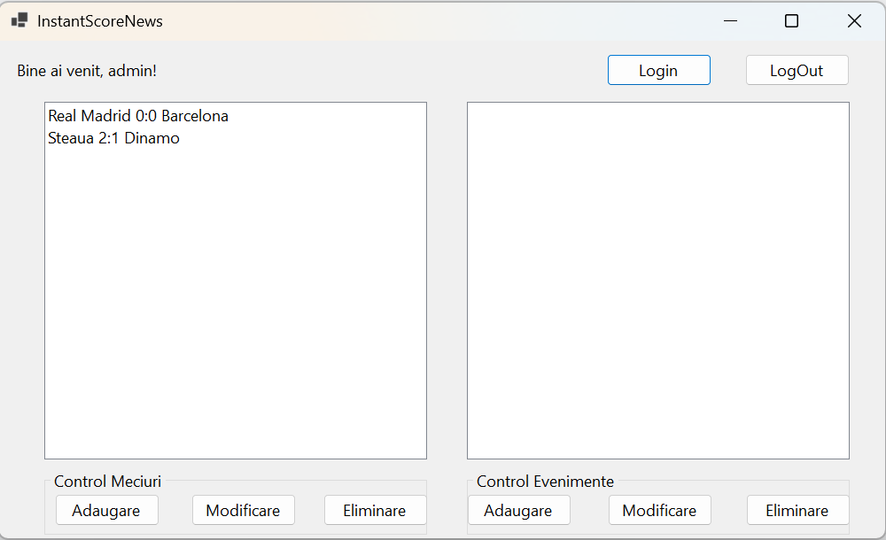
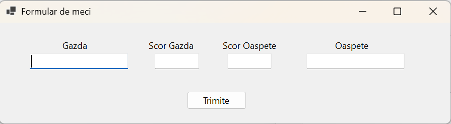
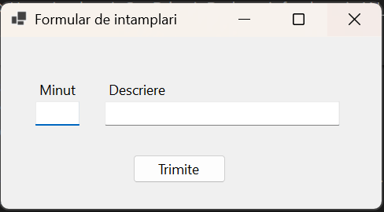

Modul Administrator
Dacă ai acces ca administrator, aplicația InstantScoreNews îți oferă posibilitatea completă de a gestiona meciurile și evenimentele din sistem.
Interfața administratorului

În această stare, aplicația indică "Bine ai venit, admin!" și permite utilizarea tuturor butoanelor:
Butoane disponibile
- Login – butonul rămâne activ pentru a permite autentificarea unui alt cont (opțional).
- LogOut – deconectează utilizatorul curent (admin).
Secțiunea "Control Meciuri"
- Adăugare – deschide o fereastră unde poți introduce detalii despre un meci nou (echipe, scor; cu mențiunea gazdă/oaspete).

- Modificare – permite editarea unui meci selectat din listă.
- Eliminare – șterge meciul selectat din listă. Atenție: operațiunea este definitivă.
Secțiunea "Control Evenimente"
- Adăugare – deschide o fereastră pentru adăugarea unui eveniment la un meci (ex: gol, fault, schimbare; cu mențiunea minutului).

- Modificare – editează un eveniment existent.
- Eliminare – șterge un eveniment selectat.
Listă meciuri
În partea stângă apare lista meciurilor curente. Poți selecta unul pentru a-l modifica sau a-i adăuga evenimente.
Listă evenimente
În partea dreaptă va fi afișată lista evenimentelor asociate meciului selectat. Dacă lista e goală, înseamnă că nu a fost selectat niciun meci sau nu există evenimente înregistrate.
Înapoi la pagina principală
© 2025 InstantScoreNews - Toate drepturile rezervate.